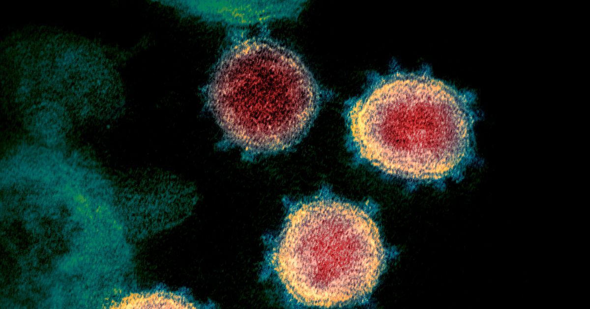

Científicos advierten sobre fiabilidad de pruebas 'rápidas' para detectar nuevo coronavirus
Salud
AP
Algunos líderes políticos están elogiando posibles avances en la lucha contra el COVID-19: una prueba de sangre con un simple pinchazo o hisopos nasales que puede determinar en cuestión de minutos si alguien tiene, o ha tenido, el virus SARS-CoV-2.
Los test podrían revelar el verdadero alcance del brote y ayudar a separar a los sanos de los contagiados.No obstante, algunos científicos han cuestionado su precisión.
Las esperanzas descansan en dos tipos de pruebas rápidas: las de antígeno, que emplean un hisopo de nariz o garganta para detectar el virus, y las de anticuerpos, que buscan en la sangre evidencias de que una persona tuvo el nuevo coronavirus y se recuperó.Los test escasean, y algunos consideran que no son fiables.
'El mercado está completamente loco', criticó el jueves el ministro español de Sanidad, Salvador Illa, lamentando la escasez de mascarillas, equipos de protección personal y pruebas rápidas, debido a que 'todo el mundo quiere comprar productos que se fabrican en cantidad inferior a la que se solicita en estos momentos por parte de todos los países'.
El Gobierno español devolvió el jueves 9 mil test rápidos de antígenos considerados no fiables a su fabricante que, según el gobierno de China, no tenía licencia para venderlos.
El primer ministro de Reino Unido, Boris Johnson, dijo esta semana que este tipo de análisis 'cambian las reglas del juego' y anunció que su gobierno encargó 3.5 millones de pruebas.
Con esto, Reino Unido espera los pacientes que superaron el COVID-19 puedan volver a trabajar, sabiendo que son inmunes, al menos por ahora.Esto podría aliviar la paralización económica del país y recuperar a los trabajadores de salud que están en cuarentena por miedo a que estén contagiados.
Muchos científicos se han mostrado cautos al respecto, señalando que no está claro que estas pruebas arrojen resultados precisos.
En los últimos meses, gran parte de los análisis requerían de doctores que insertaban algo similar a un largo hisopo de algodón en la nariz o la garganta de un paciente para recuperar células que pudiesen contener virus vivos.
En los laboratorios, los científicos extraen material genético del coronavirus y hacen miles de millones de copias para que un número suficiente de computadoras puedan detectarlo.En algunos casos, los resultados pueden demorarse varios días.
Las pruebas rápidas de antígenos incluyen hisopos más cortos que los pacientes pueden usar ellos mismos para recopilar las muestras.Son similares a los test rápidos para la gripe, que pueden ofrecer resultados en menos de 15 minutos.Se centran en los antígenos, es decir, partes de la superficie del SARS-CoV-2 que hacen que el cuerpo de una persona infectada comience a producir anticuerpos.
Las autoridades médicas de China, Estados Unidos y otros países han dado pocos detalles sobre las tasas de falsos positivos y falsos negativos en las pruebas del coronavirus.Los expertos están preocupados porque las rápidas puedan ser mucho menos fiables que los métodos que requieren más tiempo.
La baja precisión ha sido también motivo de preocupación en las pruebas de la gripe.Científicos españoles señalaron que en el caso de las del COVID-19 que revisaron, menos de 30 por ciento eran correctas.Los resultados de laboratorio tienen alrededor de un 84% de fiabilidad.
Dudas similares se ciernen sobre los nuevos test de anticuerpos con muestras de sangre.Algunas versiones se han 'vendido' como un pinchazo en el dedo que puede dar información relevante en unos minutos.
Estos son más valiosos para determinar quién se contagió en el pasado reciente, quién se ha vuelto inmune a la enfermedad y, si se hacen a gran escala, cuánto se ha propagado una infección en una comunidad.
Las pruebas de anticuerpos también dan a los científicos una mejor comprensión de la letalidad del coronavirus para la población, porque ofrecen una mejor comprensión de cuánta gente llegó a estar infectada, desde los que nunca mostraron síntomas hasta los que murieron por la enfermedad.Los resultados también guiarán el desarrollo de futuras vacunas.
Pero todavía se desconocen muchas cosas, incluyendo cuánto tiempo duran los anticuerpos, la inmunidad, y a quien deberían realizarse los análisis de sangre.
'No tenemos todas las respuestas', señaló el doctor Robin Patel, presidente de la Asociación Americana de Microbiología.
En la mayoría de los casos, los pacientes con COVID-19 sufren síntomas leves o moderados, como fiebre y tos, que desaparecen en dos o tres semanas, pero en otros, especialmente gente mayor o con enfermedades previas, pueden darse cuadros más grave, incluyendo neumonía o la muerte.La mayoría de los enfermos se recuperan.
Posted On: 2020-03-27T00:00:00


Content Date: 2020-03-27
Download Date: 2021-04-08
Document ID: L0C049L6U